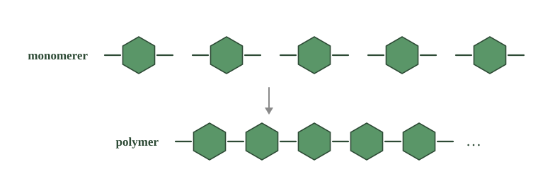
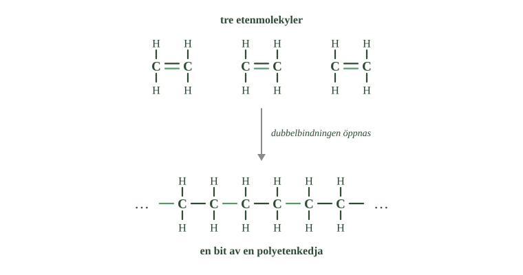
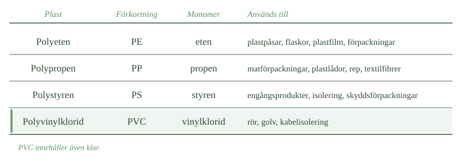

- Vad är skillnaden mellan en monomer och en polymer?
- Vad betyder förleden mono- och poly-?
- Vilka polymerer finns i naturen, och vad är de byggda av?
- Hur kan stärkelse och cellulosa vara så olika när de byggs av samma byggsten?
- Varför blir material av långa molekyler sega och tåliga?
Plast, gummi och nylon bygger på samma idé: många små molekyler kopplas ihop till en enda mycket stor. Det är det sista och största som kolatomens förmåga att binda till sig själv gör möjligt.
En liten molekyl och en väldigt stor
En monomer är en liten molekyl som går att bygga ihop med andra likadana. Ordet mono betyder en.
När många monomerer kopplas samman bildas en polymer. Ordet poly betyder många.
En polymer är alltså en enda molekyl, men en mycket stor sådan. Den består av samma lilla enhet om och om igen, ibland tusentals gånger.
Tänk på en kedja
Bilden att ha i huvudet är en kedja.
En ensam länk är liten och gör inte mycket nytta. Men tusentals likadana länkar kopplade efter varandra blir något helt annat — något långt, böjligt och starkt.
Länkarna är monomererna. Kedjan är polymermolekylen.
Och lägg märke till en sak: varje länk är likadan som alla andra. Det är just upprepningen som gör det till en polymer.
- Jämför enheterna i den övre raden. Skiljer sig någon av dem från de andra?
- Vad har hänt med de lediga bindningarna i den nedre raden?
- Vad betyder de tre punkterna längst till höger?

Naturen kom först
Polymerer är ingen mänsklig uppfinning. Naturen byggde stora molekyler av upprepade enheter långt innan någon tillverkade plast.
Cellulosa är en polymer. Den finns i växternas cellväggar och är det som gör trä och bomull starka. Byggstenen är glukos — samma druvsocker som bildas vid fotosyntesen.
Stärkelse är också byggd av glukos, men enheterna sitter ihop på ett annat sätt. Därför blir det två helt olika ämnen av samma byggsten. Stärkelse kan vi äta; cellulosa kan vi inte.
Proteiner är polymerer också. Där är byggstenarna aminosyror i stället för glukos.
När kemister började tillverka plast använde de alltså en idé som redan fanns i naturen.
Långa molekyler ger sega material
Varför blir plast som den blir?
En liten molekyl kan lätt glida förbi sina grannar. En lång polymermolekyl kan inte det. Den har kontakt med många andra molekyler längs hela sin längd, och kedjorna trasslar dessutom in sig i varandra som spagetti på en tallrik.
Därför blir polymerer sega, böjliga och tåliga.
Det är samma princip som med kokpunkterna: större molekyler hålls fast bättre. Hos polymererna har molekylerna blivit så stora att det inte bara avgör kokpunkten — det avgör hela materialet.
- Vad är skillnaden mellan en monomer och en polymer?
- Vad betyder förleden mono- och poly-?
- Vilka polymerer finns i naturen, och vad är de byggda av?
- Hur kan stärkelse och cellulosa vara så olika när de byggs av samma byggsten?
- Varför blir material av långa molekyler sega och tåliga?
Plast, gummi, nylon och de flesta material vi kallar syntetiska bygger på samma idé: många små molekyler kopplas samman till mycket stora. De stora molekylerna kan bestå av tusentals upprepade delar.
Polymerer är den sista konsekvensen av den egenskap vi följt genom hela kapitlet. Kolatomer kan binda starkt till varandra. Först såg vi korta och långa kolkedjor. Nu ska vi se hur hela molekyler kopplas samman så att kedjorna blir enorma.
En polymer är en kedja av upprepade enheter
En liten molekyl som kan byggas ihop till en stor kallas en monomer. Mono betyder en. När många monomerer kopplas samman bildas en polymer, och poly betyder många.
En polymer är alltså en mycket stor molekyl som består av ett stort antal upprepade enheter. Kedjan kan innehålla tusentals sådana enheter.
Man kan tänka på monomererna som länkar. En ensam länk är liten. Tusentals likadana länkar kopplade efter varandra blir en mycket lång kedja, och det är den kedjan som är polymermolekylen.
Polymerer finns också i naturen
Polymerer är inte en mänsklig uppfinning. Naturen byggde stora molekyler av upprepade enheter långt innan människan framställde plast.
Cellulosa, som bygger upp växternas cellväggar, består av ett mycket stort antal glukosenheter kopplade till långa kedjor. Stärkelse är också uppbyggd av glukosenheter, men sammanbundna på ett annat sätt — och därför får de två ämnena olika egenskaper trots samma byggsten.
Proteiner är också polymerer. Där är byggstenarna inte glukos utan aminosyror, som kan kopplas samman i långa kedjor och sedan veckas till olika former.
Kemisterna använde alltså en princip som redan fanns i levande organismer. Naturens stora molekyler återkommer vi till längre fram.
Den långa kedjan ger materialet dess egenskaper
En liten molekyl kan lätt röra sig förbi sina grannar. En lång polymermolekyl har kontakt med många andra molekyler längs hela sin kedja. Kedjorna ligger intill varandra, trasslar in sig och håller fast vid varandra.
Det gör att polymermaterial blir sega, formbara och tåliga.
Det är samma princip som när vi jämförde kolväten: längre molekyler hålls fast bättre av sina grannar, och därför har de högre kokpunkt. Hos polymererna har molekylerna blivit så stora att principen inte bara avgör kokpunkten, utan hela materialets karaktär.
Alla kedjor är inte lika långa
Standardtexten säger att en polymermolekyl består av tusentals upprepade enheter. Det stämmer, men formuleringen antyder något som inte är sant: att alla molekyler i en bit plast är likadana.
Det är de inte.
När en vanlig kemisk förening bildas får varje molekyl exakt samma formel. Varje vattenmolekyl har två väteatomer och en syreatom, utan undantag.
Vid polymerisation fungerar det annorlunda. Varje kedja börjar växa vid en egen tidpunkt och slutar växa vid en egen tidpunkt. En kedja kan hinna få tvåtusen enheter, grannkedjan femtonhundra, en tredje niotusen.
En bit polyeten är alltså inte ett rent ämne i vanlig mening. Det är en blandning av molekyler av samma slag men olika längd. Man kan inte ange en molekylformel för polyeten, bara en medellängd och en spridning.
Det har praktisk betydelse. Genom att styra hur långa kedjorna blir kan man göra polyeten som är mjuk och genomskinlig, lämplig för plastfilm, eller styv och ogenomskinlig, lämplig för dunkar. Samma monomer, samma kemiska bindningar — bara olika kedjelängd.
Om modellen. Standardnivån behandlar polyeten som ett ämne, och för det avsnittet handlar om räcker det. Men ett ämne brukar betyda att alla molekyler är lika. En polymer bryter mot det, och det är därför tillverkaren kan styra materialets egenskaper utan att ändra kemin alls.
- Vad händer med dubbelbindningen när eten polymeriserar?
- Hur många bindningar har varje kolatom före och efter polymerisationen?
- Varför kan inte en alkan polymerisera på samma sätt?
- Vad kallas processen där många monomerer kopplas samman?
- Vad har ändrats när eten har blivit polyeten, och vad har inte ändrats?
Eten är monomeren
Ett vanligt sätt att göra polymerer är att börja med en molekyl som har en dubbelbindning.
Eten, \(\ce{C2H4}\), är det enklaste exemplet. Två kolatomer som sitter ihop med en dubbelbindning, och två väteatomer på varje kolatom.
Dubbelbindningen öppnas
Nu händer det viktiga.
Den ena halvan av dubbelbindningen öppnas. Kvar mellan kolatomerna blir ett enkelt streck — och varje kolatom har plötsligt en bindning över.
Den lediga bindningen griper tag i en kolatom i nästa etenmolekyl. Den molekylen öppnar också sin dubbelbindning, och griper i sin tur tag i nästa.
Så fortsätter det. Tusentals etenmolekyler kopplas samman efter varandra till en enda lång kedja.
Lägg märke till att ingen kolatom får fler än fyra bindningar. Varje kolatom har fortfarande exakt fyra. Det enda som ändras är vart de pekar.
Processen kallas polymerisation.
- Räkna de gröna strecken i den övre raden, och sedan i den nedre.
- Hur många streck sitter det mellan de två kolatomerna i varje molekyl, före och efter?
- Räkna bindningarna vid en kolatom i nedre raden. Blir det fyra?

Bara omättade molekyler kan göra det här
Här får ordet omättad sin poäng.
Alkanerna är mättade. Alla bindningar är enkla, alla platser är upptagna av väte. En alkan har ingenting över att gripa tag med, och kan därför inte polymerisera på det här sättet.
Alkenerna är omättade. Dubbelbindningen är det som kan öppnas, och det är den som gör polymerisationen möjlig.
Att vara omättad handlar alltså inte bara om att ha färre väteatomer. Det handlar om att kunna reagera — att kunna bli något annat.
Eten blir polyeten
När många etenmolekyler kopplas samman får man polyeten.
Eten är monomeren. Polyeten är polymeren. Prefixet poly- talar om att det består av många sammankopplade enheter — precis som poly betyder många.
Polyeten är en av världens mest använda plaster. Den finns i plastpåsar, flaskor, dunkar, förpackningar och plastfilm.
Tänk på vad som hänt. Eten är en gas. Polyeten är ett fast material du kan hålla i handen. Atomerna är desamma — det enda som ändrats är hur stora molekylerna är.
- Vad händer med dubbelbindningen när eten polymeriserar?
- Hur många bindningar har varje kolatom före och efter polymerisationen?
- Varför kan inte en alkan polymerisera på samma sätt?
- Vad kallas processen där många monomerer kopplas samman?
- Vad har ändrats när eten har blivit polyeten, och vad har inte ändrats?
Dubbelbindningen öppnas och blir två nya bindningar
Ett viktigt sätt att framställa polymerer är att utgå från molekyler med en dubbelbindning mellan två kolatomer.
Ta eten, \(\ce{C2H4}\). De två kolatomerna sitter ihop med en dubbelbindning, och varje kolatom bär dessutom två väteatomer.
När eten polymeriserar öppnas en del av dubbelbindningen, så att bindningen mellan kolatomerna blir enkel. Då har varje kolatom en bindning över, och den används till att gripa tag i en kolatom i nästa etenmolekyl.
När många etenmolekyler gör samma sak kopplas de samman efter varandra till en lång kedja.
Kolatomerna får inte fler än fyra bindningar. Varje kolatom har fortfarande fyra sammanlagt — det som ändras är hur de är fördelade.
Processen kallas polymerisation.
Därför är det omättade kolväten som polymeriserar
Här får begreppet omättad sin användning.
Alkanerna är mättade. De har bara enkelbindningar och så många väteatomer som får plats, och de har därför inga bindningar över.
Alkenerna är omättade. Dubbelbindningen gör att molekylen kan reagera på ett sätt en alkan inte kan: en del av bindningen kan öppnas och användas till nya bindningar mellan molekyler.
Att ett kolväte är omättat påverkar alltså inte bara dess formel. Det gör molekylen mer reaktiv och möjlig att koppla samman med andra.
Eten blir polyeten
När många etenmolekyler kopplas samman bildas polyeten. Eten är monomeren, polyeten är polymeren, och prefixet poly- talar om att materialet består av många sammankopplade enheter.
Polyeten är en av världens mest använda plaster. Den finns i plastpåsar, flaskor, dunkar, förpackningar och plastfilm.
Det som började som en gas har alltså blivit ett fast material. Atomerna är desamma — det är molekylernas storlek som ändrats.
Något måste starta kedjereaktionen
Standardtexten säger att dubbelbindningen öppnas och att kolatomen får en bindning över. Det den inte säger är varför den skulle öppnas. En etenmolekyl ligger inte och väntar på att falla isär — dubbelbindningen är stark och stabil.
Det behövs något som startar.
Det som startar kallas en initiator. Det är en molekyl som lätt går sönder, till exempel vid uppvärmning, och som då lämnar efter sig en partikel med en oparad elektron. En sådan partikel kallas en fri radikal, och den är mycket reaktiv — den vill parihop sin ensamma elektron.
Radikalen angriper en etenmolekyl och tar hälften av dubbelbindningen. Nu är etenmolekylen själv en radikal, med en oparad elektron i andra änden. Den angriper nästa etenmolekyl. Och nästa.
Det är alltså en kedjereaktion i ordets egentliga mening: varje steg skapar förutsättningen för nästa. En enda initiatormolekyl kan ge upphov till en kedja med tiotusentals enheter.
Reaktionen slutar när två radikaländar råkar mötas och parihop sina elektroner. Just eftersom det sker slumpmässigt blir kedjorna olika långa — vilket är precis det fördjupningen till 4.1 beskrev.
Om modellen. "Dubbelbindningen öppnas" beskriver resultatet korrekt men utelämnar orsaken. Ingen bindning öppnar sig självmant. Bakom varje reaktion som verkar ske av sig själv finns något som startade den, och i det här fallet är det en molekyl med en ensam elektron.
- Vad avgör vilka egenskaper en plast får?
- Vilken av de vanliga plasterna innehåller ett annat atomslag än kol och väte?
- Vad händer med en termoplast när den värms upp?
- Varför smälter inte en härdplast?
- Varför kan naturens nedbrytare bryta ner cellulosa men inte polyeten?
Byt monomer, få en annan plast
Polyeten är bara en av många plaster. Byter man ut monomeren får man en polymer med andra egenskaper.
Polyeten görs av eten. Polypropen görs av propen. Polystyren görs av styren.
PVC görs av vinylklorid, och skiljer sig från de andra tre: den innehåller nämligen också kloratomer, inte bara kol och väte.
Resultatet blir plaster som är helt olika. En är mjuk och böjlig. En annan är styv och hård. En tredje går att dra ut till trådar som kan vävas till tyg.
Skillnaden sitter i monomeren.
- Jämför plastens namn med monomerens namn. Ser du mönstret?
- Vilken av de fyra plasterna innehåller ett annat atomslag än kol och väte?
- Vilka av användningsområdena känner du igen hemifrån?

Termoplaster går att smälta om
Plaster skiljer sig också åt i hur kedjorna sitter i förhållande till varandra.
I en termoplast ligger kedjorna bredvid varandra utan att vara fastbundna vid varandra. När plasten värms upp glider de lättare förbi varandra. Plasten mjuknar och går att forma om. Kyls den blir den fast igen.
Polyeten, polypropen och polystyren är termoplaster. Därför går de att smälta ner och göra om till något nytt.
Härdplaster går inte
I en härdplast är kedjorna däremot fastbundna vid varandra på många ställen. De bildar ett nätverk i alla riktningar.
Då kan kedjorna inte glida. Plasten mjuknar inte när den värms. Värmer man tillräckligt mycket smälter den inte — den bryts sönder i stället.
Det är därför en plastskål från micron kan mjukna medan ett eluttag inte gör det.
Plast bryts ner långsamt
Många plaster håller väldigt länge. Det är bra så länge man använder dem, och ett problem när man slängt dem.
I naturen finns nedbrytare — bakterier och svampar. De använder enzymer, som fungerar som verktyg anpassade till bestämda sorters bindningar. Ett enzym som kan bryta cellulosa kan inte bryta vad som helst.
Naturliga polymerer som stärkelse, cellulosa och proteiner har funnits i miljontals år. Det finns gott om organismer med rätt verktyg för dem.
Syntetiska plaster har funnits i ungefär hundra år. Nästan ingen organism har verktyg för dem. Molekylerna är långa, stöter bort vatten och hålls ihop av starka bindningar.
Därför blir plast kvar i naturen mycket länge. Den försvinner inte — men den kan brytas sönder i allt mindre bitar av solljus, värme och slitage. Vad som händer sedan tittar vi på längre fram.
- Vad avgör vilka egenskaper en plast får?
- Vilken av de vanliga plasterna innehåller ett annat atomslag än kol och väte?
- Vad händer med en termoplast när den värms upp?
- Varför smälter inte en härdplast?
- Varför kan naturens nedbrytare bryta ner cellulosa men inte polyeten?
Olika monomerer ger olika plaster
Polyeten är bara en av många syntetiska polymerer. Med olika monomerer får man polymerer med olika struktur och därmed olika egenskaper.
Polyeten tillverkas av eten, polypropen av propen och polystyren av styren. PVC framställs av vinylklorid och skiljer sig från de övriga genom att det också innehåller kloratomer.
En plast kan vara mjuk och böjlig, en annan styv och hård, en tredje möjlig att dra ut till fibrer. Skillnaden ligger i monomeren.
Termoplaster mjuknar vid uppvärmning
Plaster skiljer sig också åt i hur kedjorna är kopplade till varandra.
I en termoplast ligger kedjorna bredvid varandra utan att vara fast bundna. Vid uppvärmning glider de lättare förbi varandra, plasten mjuknar och kan formas om. När den kyls blir den fast igen. Polyeten, polypropen och polystyren är termoplaster, och de kan därför smältas om.
I en härdplast är kedjorna sammanbundna med många bindningar till ett tredimensionellt nätverk. Kedjorna kan inte glida fritt, och plasten smälter därför inte — vid kraftig uppvärmning bryts den i stället ner.
Långa kedjor bryts ner långsamt
Många syntetiska polymerer är mycket hållbara. Det är en fördel i en produkt som ska hålla länge, och ett problem när produkten kastas.
Naturens nedbrytare använder enzymer som angriper bestämda kemiska bindningar, och de är anpassade till ämnen som förekommer naturligt. Stärkelse, cellulosa och proteiner kan därför brytas ner av organismer som har rätt enzymer.
Många syntetiska polymerer har en struktur som enzymerna inte kan angripa. Molekylerna är långa, vattenavstötande och byggda av starka bindningar. Därför kan plast finnas kvar i miljön mycket länge.
Att plasten bryts ner långsamt betyder inte att den är oförändrad. Solljus, värme och slitage kan dela den i mindre bitar. Vad som händer med plasten i miljön återkommer vi till.
Skillnaden mellan mjuk och styv plast sitter i ordningen
Standardtexten förklarar skillnaden mellan termoplast och härdplast med hur kedjorna är bundna till varandra. Det är korrekt, men det förklarar inte varför två termoplaster kan vara så olika — varför en plastpåse är mjuk och en plastdunk styv, fast båda är polyeten.
Svaret är att polymerkedjor kan ligga i olika grad av ordning.
På vissa ställen lägger sig kedjorna prydligt bredvid varandra, packade tätt och parallellt, nästan som i en kristall. På andra ställen ligger de huller om buller, trassliga och oordnade.
De ordnade områdena är täta och styva. De oordnade är glesa och böjliga. En plast med mycket ordning blir hård och ogenomskinlig; en med lite ordning blir mjuk och genomskinlig.
Det avgörande är hur mycket kedjorna kan lägga sig till rätta, och det beror på om de är raka eller har utstickande grenar. Grenade kedjor kommer i vägen för varandra och hindrar packningen.
Polyeten tillverkas därför i två varianter. Den grenade är mjuk och används till plastpåsar och film. Den ogrenade packar sig tätt, blir styv och används till dunkar, backar och rör.
Samma monomer. Samma bindningar. Samma polymer, kemiskt sett. Skillnaden är hur kedjorna ligger.
Om modellen. Termoplast och härdplast är en bra indelning, och den förklarar varför somliga plaster går att smälta om. Men den delar in plaster i två fack, och inom varje fack finns fortfarande enorma skillnader. Ordningen mellan kedjorna är den andra axeln, och den är lika viktig för hur materialet känns i handen.
Laddar övningskort…
Laddar frågor ...